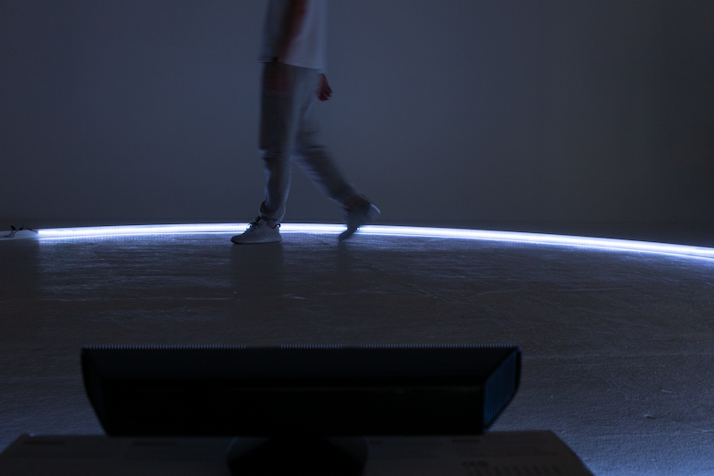
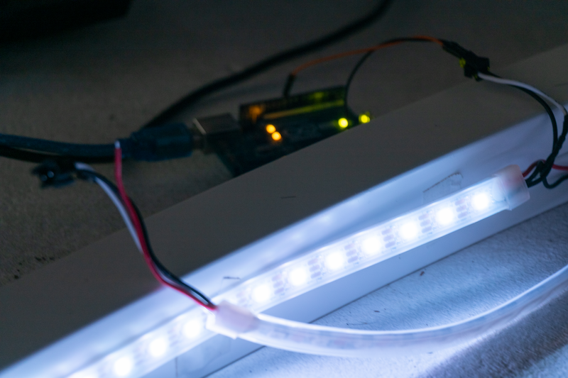
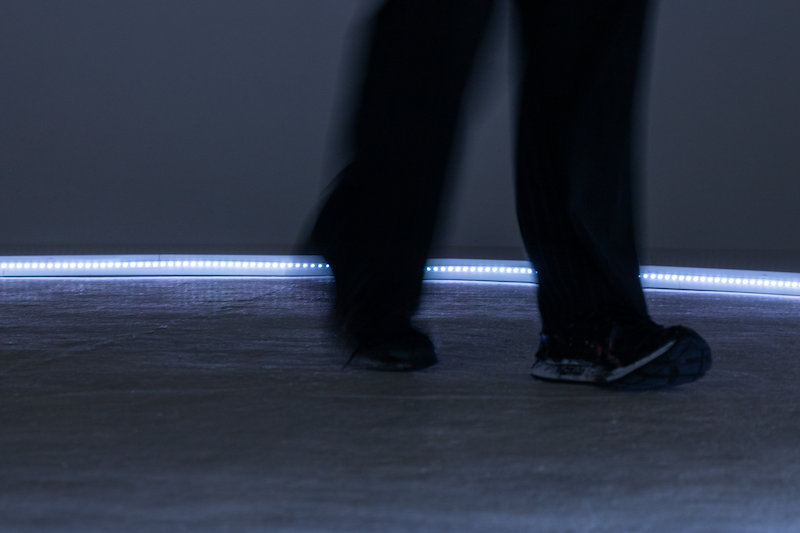
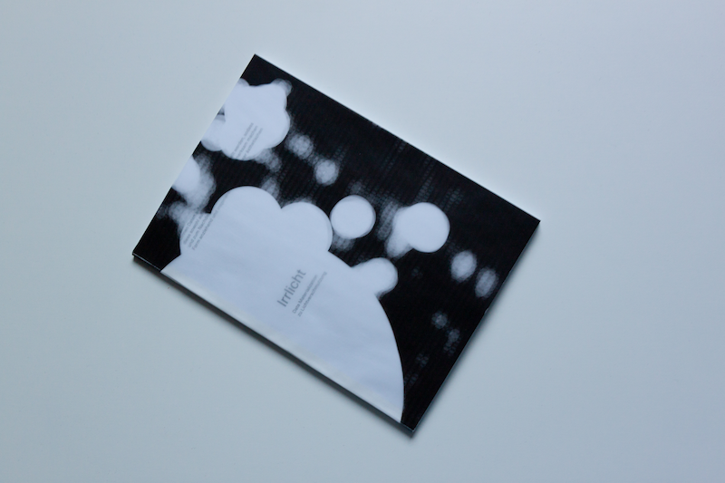
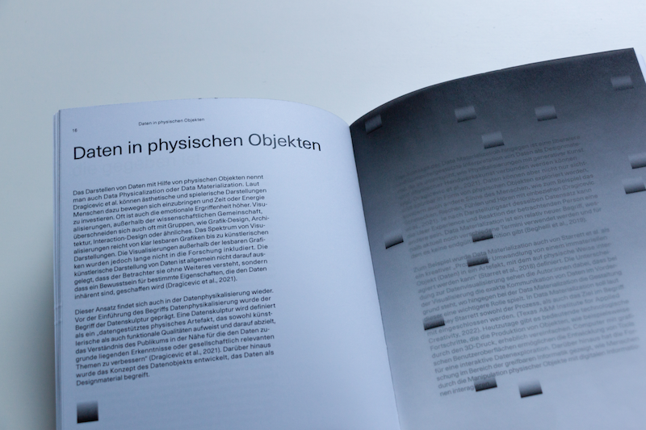

Challenge
Can data be presented in such a way that it both draws attention to a specific topic and encourages people to reflect on it,
as well as being attractive and inspiring with its aesthetic form?
Solution
I don't want to use classic elements of data visualization, but rather make data perceptible through a solution that takes place in physical space.
By experiencing a data materialization, the viewers can find a simple and playful approach to complex topics.
Output
Irrlicht is an installation on the problem of light pollution.
Light pollution occurs when artificial light enters the atmosphere and is reflected by dust and water.
The installation uses the position of a person within a ring to adjust the light intensity depending on the actual light pollution in Mannheim.
With each step, the viewer feels the effects on brightness and audio elements, which become louder when the light intensity is high.
In this way, light pollution can be experienced with one's own senses.


My research on the subject of light pollution, the method of data materialization and the documentation of the Irrlicht installation have been presented in the booklet “Irrlicht - Data Materialization on Light Pollution”.

